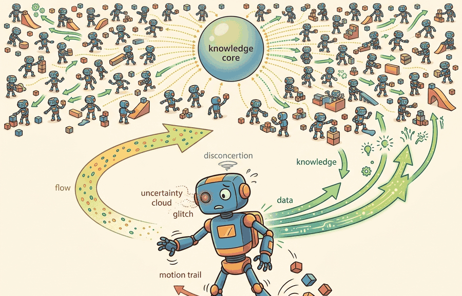

"One environment teaches slowly. Ten thousand teach the same lesson in the same second, and the gradient notices."
Section 17.1

Why thousands of parallel envs changed the field is the scaling story behind modern robot RL. Instead of waiting for one simulator to finish one trajectory, the learner gathers a tensor of trajectories from thousands of environments, usually on the same accelerator that updates the policy.
For Why thousands of parallel envs changed the field, GPU RL depends on simulator fidelity, PPO rollout semantics, reward terms, and reset distribution being versioned in the same training artifact.
This section develops the technical contract for vectorized rollouts. We separate throughput, the number of environment steps collected per second, from statistical diversity, the amount of genuinely different experience inside those steps.
The key question is practical: when a run reports 98,304 samples per PPO update, do those samples cover different terrain, commands, contacts, and failure modes, or do they come from synchronized copies of the same narrow task?
Parallel environments turn time into width: one rollout step produces a whole column of experiences. The policy improves only when that width contains useful variation, so seeds, terrain randomization, command sampling, and reset logic are part of the learning algorithm.
Theory
For PPO-style training, one update typically consumes a rollout block with shape $T \times N \times d$, where $T$ is the horizon, $N$ is the number of parallel environments, and $d$ is the observation dimension. The sample count is $T N$, but the learning signal also depends on how correlated those $N$ environments are.
If all environments reset with related seeds, share the same command schedule, and hit the same terrain patch at the same time, the gradient can become overconfident. Good parallel RL treats environment count, horizon, minibatch size, and reset diversity as a coupled design, not as separate knobs.
The mechanism is a repeated tensor operation: infer actions for all environments, step all environments, write observations, rewards, dones, values, and log probabilities into contiguous buffers, then update from shuffled slices of that buffer. GPU RL wins when simulation, policy inference, and storage stay resident on device and avoid per-environment Python loops.
Worked Example
Code Fragment 17.1.1 turns the rollout contract into concrete numbers. The snippet does not simulate physics; it shows the accounting a training script should print before anyone trusts a speedup claim.
# Compute the rollout block that a vectorized PPO run will train on.
# Track seed families separately because high sample count can hide correlation.
num_envs = 4096
horizon = 24
obs_dim = 48
seed_families = 128
eval_envs = 256
samples_per_update = num_envs * horizon
rollout_shape = (horizon, num_envs, obs_dim)
envs_per_seed_family = num_envs // seed_families
print(f"rollout tensor: {rollout_shape}")
print(f"samples per update: {samples_per_update:,}")
print(f"training seed families: {seed_families}")
print(f"envs sharing each seed family: {envs_per_seed_family}")
print(f"held-out evaluation envs: {eval_envs}")Expected output: the trace should report rollout shape, samples per update, seed diversity, and evaluation separation. A benchmark that reports only steps per second is missing the evidence needed to judge learning quality.
In practical GPU RL, Isaac Lab, RSL-RL, rl_games, SKRL, Brax, and MJX already implement the wide rollout machinery. The library shortcut is not the idea that batching exists; it is that the framework keeps simulation buffers, policy inference, and learner tensors aligned while you focus on reset diversity, reward terms, and held-out evaluation.
Practical Recipe
- Choose $N$ and $T$ together so the rollout covers enough states without making the policy update stale.
- Assign independent seed families, command samples, and domain randomization draws before measuring throughput.
- Keep simulation, observations, rewards, actions, and learner tensors on the same device whenever the framework supports it.
- Reserve evaluation environments with separate seeds and no exploration noise.
- Log steps per second, reward, success rate, fall rate, reset reasons, GPU memory, and the exact seed set in one artifact.
The common mistake is to increase environment count until the GPU looks busy, then forget that neighboring environments may be seeing nearly identical episodes. Throughput without diversity can make a weak policy converge faster to the wrong behavior. Consider a specific case: a team running 4,096 quadruped environments on flat terrain with a single global reset seed reports 200 million steps per hour and a rising average reward. The policy learns to exploit the one terrain patch and one command velocity it repeatedly sees, so reward climbs quickly on the training panel. When the same checkpoint is evaluated on held-out slopes and randomized payloads, success rate drops from 91% to 34%. The diagnostic signal is a narrow reward distribution across environments: if per-environment return variance is low while aggregate return is high, the batch is correlated and the policy has overfit to training conditions rather than learned a general skill. Reducing correlated resets and logging per-stratum success rates before claiming a training win catches this failure early.
A legged-robotics team may train 4,096 simulated quadrupeds at once, but it should still stratify resets across slopes, pushes, payloads, friction, and command velocities. The useful artifact is a panel showing which strata improved, not a single aggregate reward curve.
Thousands of environments are a choir, not a crowd, if every reset sings the same note. The conductor is the seed schedule.
As of 2026, the frontier is moving from faster simulator loops toward richer on-device experience: pixel observations, many robot morphologies, domain randomization, and sim-to-real evaluation in the same workflow. The research risk is that accelerator-scale training can make closed-loop success look mature before independent hardware tests and held-out task panels confirm it.
Can you name $N$, $T$, samples per update, seed families, evaluation seeds, and the reset strata for a reported parallel RL run? If not, the speedup is not yet reproducible.
The idea in this section becomes useful when the rollout block is treated as a scientific object. A complete block has shape, seed provenance, reset causes, reward components, termination flags, and value estimates. Without those fields, a run can be fast and still be impossible to debug.
The graduate-level habit is to separate three claims. The systems claim says the simulator collected steps faster. The learning claim says the policy improved on held-out seeds. The embodiment claim says the improved policy survives contacts, delays, disturbances, and sensing limits that were not silently tuned into the training panel.
| Tool or Library | Role in the Topic | Builder Advice |
|---|---|---|
| Isaac Lab | GPU-resident robot tasks with thousands of environments | Use it when the task depends on articulated robots, sensors, terrain, and NVIDIA simulation assets. |
| RSL-RL | High-throughput PPO for legged locomotion | Use it when the policy and rollout tensors should stay close to the simulator and the task uses common locomotion conventions. |
| Brax | JAX-native batched physics and RL loops | Use it when compilation, vectorization, and accelerator scaling matter more than photorealistic sensing. |
| MJX | MuJoCo-style models executed through JAX | Use it when you want MuJoCo modeling concepts with accelerator-friendly batched stepping. |
| Gymnasium VectorEnv | CPU-side vectorization baseline | Use it as a debugging baseline before claiming that GPU residency changed the learning result. |
A robust implementation starts with a rollout ledger. The ledger records the exact training panel and the separate evaluation panel, so throughput, reward, and generalization are not stitched together from different runs.
- Record environment count, horizon, minibatch count, epochs, device, and GPU memory budget.
- Store training seeds and evaluation seeds as different lists, not as one global seed.
- Log reset strata such as terrain, command range, friction, mass, and push schedule.
- Export success, return, fall rate, and reset reason from the same evaluation pass.
- Compare methods only when one script evaluates them on the same held-out panel.
# Build one reproducibility record for a parallel rollout run.
# Keep training seeds separate from evaluation seeds to prevent leakage.
from dataclasses import dataclass, asdict
@dataclass
class RolloutLedger:
envs: int
horizon: int
train_seed_families: int
eval_seed_families: int
device: str
artifact: str
def as_row(self) -> dict[str, object]:
return asdict(self)
ledger = RolloutLedger(
envs=4096,
horizon=24,
train_seed_families=128,
eval_seed_families=16,
device="cuda:0",
artifact="runs/walk_4096x24_eval16.jsonl",
)
print(ledger.as_row())When a massively parallel run fails, first ask whether the policy failed or whether the batch lied. Check for synchronized resets, stale normalization statistics, identical command curricula, action clipping, and evaluation seeds that were also used during training. Then rerun a smaller batch where every episode can be inspected by seed family.
For parallel rollout claims, compare only construct-matched metrics that are co-computed in one pass on one configuration: same environment panel, same policy checkpoint, same held-out seed set, same perturbation suite, and the same success definition. Save steps per second, GPU memory, reward, success rate, fall rate, and reset reasons as one artifact so speed and learning quality are backed by the same run.
Thousands of parallel environments changed robot RL because they made experience collection wide enough to match accelerator learning, but the gain is real only when the batch is diverse, evaluation is separate, and the artifact records both speed and behavior.
Design a 2,048-environment PPO run for a walking robot. Specify $T$, minibatch size, train seed families, held-out evaluation seeds, reset strata, and the one artifact that would let another team reproduce both throughput and success rate.
What's Next?
This section turned parallel environment count into a reproducible rollout contract: define $N$, $T$, seed diversity, device residency, evaluation separation, and one comparable artifact. Next, continue with Section 17.2, where that contract becomes a practical recipe for fast locomotion training.
Isaac Gym is the historical reference for why GPU-resident physics changed robot RL throughput. Read it here for the systems shift: simulation, policy inference, and rollout storage become one accelerator-scale pipeline.
Brax shows the same parallelism lesson from the JAX side. Its value for this section is the mental model of environment batches as arrays rather than as thousands of Python objects.
NVIDIA Isaac Lab documentation.
Isaac Lab is the practical successor workflow for defining large robot-learning task panels. Use the documentation to inspect how task configs, wrappers, and runners preserve the rollout contract at scale.
Google DeepMind MuJoCo MJX documentation.
MJX brings MuJoCo modeling concepts into JAX execution. It supports the section's main point that simulator semantics and accelerator-friendly batches now need to be designed together.
Rudin et al. provide the canonical locomotion example behind the chapter title. Read it for the coupling between environment count, reward design, terrain variation, and wall-clock claims.
RSL-RL is a useful code reference for PPO storage and update patterns in legged locomotion. Its configs make the rollout dimensions and minibatch choices concrete.